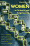
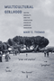

|
Who
Cares for the Elderly?
Public Policy and the Experiences of Adult Daughters
Abel, Emily K. 248 pp • 6x9 • Spring
1991
paper 978-0-87722-950-6
cloth 978-0-87722-814-1
|
 |
Doing
Comparable Worth
Gender, Class, and Pay Equity
Acker, Joan 272 pp • 6x9 • Fall
1989
paper 978-0-87722-834-9
cloth 978-0-87722-621-5 |
 |
Reclaiming
Class
Women, Poverty, and the Promise of Higher Education in America
edited by Adair, Vivyan C. and Sandra L. Dahlberg 280
pp • 6x9 • Spring 2003
paper 978-1-59213-022-1
cloth 978-1-59213-021-4
|
 |
Impure
Thoughts
Essays on Philosophy, Feminism, and Ethics
Addelson, Kathryn Pyne 257 pp • 5.5x8.25
• Fall 1990
paper 978-0-87722-960-5
cloth 978-0-87722-753-3 |
|  |
Journeys
of Women in Science and Engineering
No Universal Constants
Ambrose, Susan A., Kristin L. Dunkle, Barbara B. Lazarus, Indira Nair
and Deborah A. Harkus 512 pp • 7x10 •
Spring 1997
paper 978-1-56639-528-1
cloth 978-1-56639-527-4
|
 |
Women
Reformed, Women Empowered
Poor Mothers and the Endangered Promise of Head Start
Ames, Lynda J. with Jeanne Ellsworth 264
pp • 5.5x8.25 • Fall 1996
paper 978-1-56639-493-2
cloth 978-1-56639-492-5 |
 |
Policing
Women
The Sexual Politics of Law Enforcement and the LAPD
Appier, Janis 256 pp • 6x9 • Fall
1997
paper 978-1-56639-560-1
cloth 978-1-56639-559-5
|
 |
Hitler's
Heroines
Stardom and Womanhood in Nazi Cinema
Ascheid, Antje 288 pp • 6x9 • Fall
2002
paper 978-1-56639-984-5
cloth 978-1-56639-983-8
|
 |
The
Fibromyalgia Story
Medical Authority and Women's Worlds of Pain
Barker, Kristin K. 264 pp • 6x9 •
Spring 2005
paper 978-1-59213-161-7
cloth 978-1-59213-160-0
|
 |
Putting
on Appearances
Gender and Advertising
Barthel, Diane 232 pp • Fall 1989
paper 978-0-87722-661-1
cloth 978-0-87722-528-7
|

|
Behind the Mask of the Strong Black Woman
Voice and the Embodiment of a Costly Performance
Beauboeuf-Lafontant, Tamara
194 pp • 5.5x8.25 • Fall 2009
paper 978-1-59213-668-1
cloth 978-1-59213-667-4
|

|
DES Daughters
Embodied Knowledge and the Transformation of Women's Health Politics
Bell, Susan
232 pp • 6x9 • Fall 2009
paper 978-1-59213-919-4
cloth 978-1-59213-918-7
|

|
The Cost of Being a Girl
Working Teens and the Origins of the Gender Wage Gap
Besen-Cassino, Yasemin
238 pp • 6x9 • Fall 2017
paper 978-1-4399-1349-9
cloth 978-1-4399-1348-2 |
 |
Earth
Muse
Feminism, Nature, and Art
Bigwood, Carol 320 pp • 6x9 • Fall
1992
paper 978-0-87722-987-2
cloth 978-0-87722-986-5 |
 |
The
Paradox of Natural Mothering
Bobel, Chris 240 pp • 5.5x8.25 •
Fall 2001
paper 978-1-56639-907-4
cloth 978-1-56639-906-7
|
 |
Global
Production
The Apparel Industry in the Pacific Rim
edited by Bonacich, Edna, Lucie Cheng, Norma Chinchilla, Nora Hamilton
and Paul Ong 400 pp • 6x9 • Spring
1994
paper 978-1-56639-169-6
cloth 978-1-56639-168-9
|
 |
Women
and the Politics of Empowerment
edited by Bookman, Ann and Sandra Morgen
352
pp • Fall 1987
paper 978-0-87722-525-6
cloth 978-0-87722-504-1
|
 |
Suspect Citizens
Women, Virtue, and Vice in Backlash Politics
Boryczka, Jocelyn M.
216 pp • 5.5x8.25 • Fall 2012
paper 978-1-4399-0894-5
cloth 978-1-4399-0893-8
|
 |
Women
in 1900
Gateway to the Political Economy of the 20th Century
Bose, Christine E. 272 pp • 5x8 •
Fall 2000
paper 978-1-56639-838-1
cloth 978-1-56639-837-4
|
 |
Women
in the Latin American Development Process
edited by Bose, Christine E. and Edna Acosta-Bel�n 304
pp • 6x9 • Spring 1995
paper 978-1-56639-293-8
cloth 978-1-56639-292-1
|
|
Women
Living Change
Bourque, Susan C. and Donna Robinson Divine 288
pp • Spring 1985
cloth 978-0-87722-369-6 |
 |
Black
Women Writing Autobiography
A Tradition Within a Tradition
Braxton, Joanne M. 240 pp • Fall 1989
paper 978-0-87722-803-5
cloth 978-0-87722-639-0 |
|
Democratic
Theorizing from the Margins
Brettschneider, Marla 272 pp • 6x9 •
Fall 2001
paper 978-1-59213-654-4
cloth 978-1-56639-921-0
|
 |
The
Unnatural Lottery
Character and Moral Luck
Card, Claudia 232 pp • 5.5x8.25 •
Fall 1996
paper 978-1-56639-453-6
cloth 978-1-56639-452-9
|
 |
Children
in the Field
Anthropological Experiences
edited by Cassell, Joan 288 pp • Fall
1987
paper 978-1-56639-206-8
cloth 978-0-87722-477-8 |
 |
Wash
and Be Healed
The Water-Cure Movement and Women's Health
Cayleff, Susan E. 257 pp • Spring 1987
paper 978-0-87722-859-2
cloth 978-0-87722-462-4
|
|
Searching
for Safe Spaces
Afro-Caribbean Women Writers in Exile
Chancy, Myriam J. A. 272 pp • 6x9 •
Fall 1997
paper 978-1-56639-540-3
cloth 978-1-56639-539-7
|
 |
Muchachas
No More
Household Workers in Latin America and the Caribbean
edited by Chaney, Elsa M. and Mary Garcia Castro 520
pp • Fall 1988
paper 978-0-87722-835-6
cloth 978-0-87722-571-3 |
|
Doing
What Had to Be Done
The Life Narrative of Dora Yum Kim
Chin, Soo-Young
272 pp • 6x9 • Spring
1999
paper 978-1-56639-694-3
cloth 978-1-56639-693-6
|
 |
Jesus, Jobs, and Justice
African American Women and Religion
Collier-Thomas, Bettye
736 pp • 6.25x9.125 • Fall 2013
paper 978-1-4399-1105-1
|
 |
From
Black Power to Hip Hop
Racism, Nationalism, and Feminism
Collins, Patricia Hill
256 pp • 6x9 • Fall 2005
paper 978-1-59213-092-4
cloth 978-1-59213-091-7
|
 |
On Intellectual Activism
Collins, Patricia Hill
278 pp • 6x9 • Fall 2012
paper 978-1-4399-0961-4
cloth 978-1-4399-0960-7
|
 |
Women
and Film
A Sight and Sound Reader
edited by Cook, Pam and Philip Dodd 287 pp
• 5.5x8.25 • Fall 1993
paper 978-1-56639-143-6
cloth 978-1-56639-142-9
|
|
Women
and Trade Unions in Eleven Industrialized Countries
edited by Cook, Alice H., Val R. Lorwin and Arlene Kaplan Daniels
360 pp • Fall 1983
cloth 978-0-87722-319-1 |

|
Pushing for Midwives
Homebirth Mothers and the Reproductive Rights Movement
Craven, Christa
224 pp • 6x9 • Fall 2010
paper 978-1-4399-0220-2
cloth 978-1-4399-0219-6
|
|
Woman's
Place Is at the Typewriter
Office Work and Office Workers, 1870-1930
Davies, Margery W. 256 pp • Fall 1982
paper 978-0-87722-368-9
cloth 978-0-87722-291-0 |
 |
Liberating
Method
Feminism and Social Research
DeVault, Marjorie L. 275 pp • 6x9 •
Spring 1999
paper 978-1-56639-698-1
cloth 978-1-56639-697-4
|
|
Women
Between Two Worlds
Midlife Reflections on Work and Family
Dinnerstein, Myra 210 pp • Fall 1992
paper 978-0-87722-885-1
cloth 978-0-87722-884-4
|
|
Women's Activism and Feminist Agency in Mozambique and Nicaragua
Disney, Jennifer Leigh
New in Paperback!
306 pp • 6x9 • Spring 2010
paper 978-1-59213-829-6
cloth 978-1-59213-828-9
|
|
Navigating Gendered Terrain
Stereotypes and Strategy in Political Campaigns
Dittmar, Kelly
230 pp • 6x9 • Fall 2014
paper 978-1-43991-149-5
cloth 978-1-43991-148-8 |

|
Mulan's Legend and Legacy in China and the United States
Dong, Lan
280 pp • 6x9 • Fall 2010
paper 978-1-59213-971-2
cloth 978-1-59213-970-5
|
 |
The Archival Turn in Feminism
Outrage in Order
Eichhorn, Kate
208 pp • 5.5x8.5 • Fall 2013
paper 978-1-4399-0952-2
cloth 978-1-4399-0951-5
|
 |
Inside
Agitators
Australian Femocrats and the State
Eisenstein, Hester 312 pp • 6x9 •
Fall 1995
paper 978-1-56639-388-1
cloth 978-1-56639-387-4
|
|
Gross Misbehavior and Wickedness
A Notorious Divorce in Early Twentieth-Century America
Elson, Jean
340 pp • 6x9 • Spring 2017
paper 978-1-4399-1391-8
cloth 978-1-4399-1390-1
|
 |
Transfeminist Perspectives in and beyond Transgender and Gender Studies
edited by Enke, Anne268 pp • 6x9 • Spring 2012
paper 978-1-4399-0747-4
cloth 978-1-4399-0746-7
|
 |
Lesbian
and Bisexual Identities
Constructing Communities, Constructing Selves
Esterberg, Kristin G. 216 pp • 5.5x8.25
• Spring 1997
paper 978-1-56639-510-6
cloth 978-1-56639-509-0
|
 |
The
Feminist Case Against Bureaucracy
Ferguson, Kathy E. 304 pp • Fall 1984
paper 978-0-87722-400-6
cloth 978-0-87722-357-3 |
|
Feminist
Organizations
Harvest of the New Women's Movement
edited by Ferree, Myra Marx and Patricia Yancey Martin 488
pp • 6x9 • Fall 1994
paper 978-1-56639-229-7
cloth 978-1-56639-228-0
|
 |
The
Souls of the Skyscraper
Female Clerical Workers in Chicago, 1870-1930
Fine, Lisa M. 264 pp • Spring 1990
cloth 978-0-87722-674-1 |
 |
Women's
Political Voice
How Women are Transforming the Practice and Study of Politics
Flammang, Janet A. 480 pp • 6x9 •
Spring 1997
paper 978-1-56639-534-2
cloth 978-1-56639-533-5
|

|
She's Got a Gun
Floyd, Nancy
256 pp • 7x10 • Fall 2007
paper 978-1-59213-155-6
cloth 978-1-59213-154-9
|
|
Sisterhood
and Solidarity
Workers' Education for Women, 1914-1984
Frederickson, Mary and Joyce L. Kornbluh Fall
1984
cloth 978-0-87722-328-3 |
 |
Taking
Time
Parental Leave Policy and Corporate Culture
Fried, Mindy 256 pp • 5.5x8.25 •
Fall 1998
paper 978-1-56639-647-9
cloth 978-1-56639-646-2
|
|
Free
Women
Ethics and Aesthetics in Twentieth-Century Women's Fiction
Fullbrook, Kate 192 pp • Fall 1990
paper 978-0-87722-774-8
cloth 978-0-87722-773-1 |
 |
Ecological
Politics
Ecofeminists and the Greens
Gaard, Greta 337 pp • 6x9 • Fall
1997
paper 978-1-56639-570-0
cloth 978-1-56639-569-4
|
 |
Ecofeminism
edited by Gaard, Greta 304 pp • 6x9 •
Fall 1992
paper 978-0-87722-989-6
cloth 978-0-87722-988-9
|
 |
Weaving
Work and Motherhood
Garey, Anita Ilta 240 pp • 6x9 •
Spring 1999
paper 978-1-56639-700-1
cloth 978-1-56639-699-8
|
 |
Women
of Japan and Korea
Continuity and Change
edited by Gelb, Joyce and Marian Lief Palley 320
pp • 6x9 • Fall 1994
paper 978-1-56639-224-2
cloth 978-1-56639-223-5
|
 |
Families
and Work
edited by Gerstel, Naomi and Harriet Engel Gross 576
pp • Spring 1987
paper 978-0-87722-469-3
cloth 978-0-87722-467-9 |
 |
Women's
Paid and Unpaid Labor
The Work Transfer in Health Care and Retailing
Glazer, Nona Y. 360 pp • 6x9 • Fall
1992
paper 978-1-56639-199-3
cloth 978-0-87722-979-7 |
 |
Issei,
Nisei, War Bride
Three Generations of Japanese American Women in Domestic Service
Glenn, Evelyn Nakano 290 pp • 5.5x8.25
• Spring 1986
paper 978-0-87722-564-5
cloth 978-0-87722-412-9 |
|
An
American Feminist in Palestine
The Intifada Years
Gluck, Sherna Berger 248 pp • 6x9 •
Fall 1994
paper 978-1-56639-191-7
cloth 978-1-56639-190-0
|

|
The Dance of Politics
Gender, Performance, and Democratization in Malawi
Gilman, Lisa
268 pp • 6x9 • Spring 2009
paper 978-1-59213-986-6
cloth 978-1-59213-985-9
|
 |
Individual
Voices, Collective Visions
Fifty Years of Women in Sociology
edited by Goetting, Ann and Sarah Fenstermaker 376
pp • 6x9 • Fall 1994
paper 978-1-56639-251-8
cloth 978-1-56639-250-1 |
 |
Misconceiving
Mothers
Legislators, Prosecutors, and the Politics of Prenatal Drug Exposure
Gomez, Laura E. 256 pp • 5.5x8.25 •
Fall 1997
paper 978-1-56639-558-8
cloth 978-1-56639-557-1 |
 |
Marriage
in a Culture of Divorce
Hackstaff, Karla B. 292 pp • 6x9 •
Fall 1999
paper 978-1-56639-725-4
cloth 978-1-56639-724-7
|
 |
Abortion
Between Freedom and Necessity
Hadley, Janet 256 pp • 6x9 • Fall
1996
paper 978-1-56639-591-5
cloth 978-1-56639-506-9 |
 |
Women,
Class, and the Feminist Imagination
A Socialist-Feminist Reader
edited by Hansen, Karen V. and Ilene J. Philipson 670
pp • Fall 1989
paper 978-0-87722-654-3
cloth 978-0-87722-630-7 |
 |
Families
in the U.S.
Kinship and Domestic Politics
edited by Hansen, Karen V. and Anita Ilta Garey 944
pp • 7x10 • Spring 1998
paper 978-1-56639-590-8
cloth 978-1-56639-589-2
|
 |
Lost
Talent
Women in the Sciences
Hanson, Sandra L. 240 pp • 6x9 •
Spring 1996
cloth 978-1-56639-446-8
|
 |
Latina
Politics, Latino Politics
Gender, Culture, and Political Participation in Boston
Hardy-Fanta, Carol 272 pp • 6x9 •
Spring 1993
paper 978-1-56639-032-3
cloth 978-1-56639-031-6 |
|
Job
Training For Women
The Promise and Limits of Public Policies
edited by Harlan, Sharon L. and Ronnie J. Steinberg 572
pp • Spring 1989
paper 978-0-87722-762-5
cloth 978-0-87722-614-7 |
|
From
Mammies to Militants
Domestics in Black American Literature
Harris, Trudier 248 pp • Fall 1982
cloth 978-0-87722-279-8 |
|
From
Margin to Mainstream
American Women and Politics Since 1960
Hartman, Susan M. 216 pp • Spring 1989
cloth 978-0-87722-634-5 |
|
Opera
Muliebria
Women and Work in Medieval Europe
Herlihy, David 159 pp • Spring 1990
cloth 978-0-87722-714-4 |

|
Selecting Women, Electing Women
Political Representation and Candidate Selection in Latin America
Hinojosa, Magda
240 pp • 6x9 • Fall 2012
paper 978-1-4399-0848-8
cloth 978-1-4399-0847-1
|
 |
We
Can't Eat Prestige
The Women Who Organized Harvard
Hoerr, John
280 pp • 6x9 • Spring
1997
paper 978-1-56639-925-8
cloth 978-1-56639-535-9
|

|
Equal Play
Title IX and Social Change
edited by Hogshead-Makar, Nancy and Andrew Zimbalist
328 pp • 7x10 • Fall 2007
paper 978-1-59213-380-2
cloth 978-1-59213-379-6
|
 |
Women in Politics in the American City
Holman, Mirya R.
212 pp • 5.5x8.25 • Fall 2014
cloth 978-1-43991-170-9 |
 |
Moving
Up and Out
Poverty, Education, and the Single Parent Family
Holyfield, Lori, foreword by Hillary Rodham Clinton 184
pp • 5.5x8.25 • Fall 2001
paper 978-1-56639-915-9
cloth 978-1-56639-914-2
|
 |
Their
Day in the Sun
Women of the Manhattan Project
Howes, Ruth H. and Caroline C. Herzenberg, foreword by Ellen C. Weaver
280 pp • 6x9 • Fall 1999
paper 978-1-59213-192-1
cloth 978-1-56639-719-3
|
 |
Living
Rooms as Factories
Class, Gender, and the Satellite Factory System in Taiwan
Hsiung, Ping-Chun 200 pp • 6x9 •
Fall 1995
paper 978-1-56639-390-4
cloth 978-1-56639-389-8
|
 |
Parental
Leave and Child Care
Setting a Research and Policy Agenda
edited by Hyde, Janet Shibley and Marilyn J. Essex 448
pp • Fall 1990
cloth 978-0-87722-732-8 |
 |
Women
Living with Self-Injury
Hyman, Jane Wegscheider 248 pp • 6x9
• Fall 1999
paper 978-1-56639-721-6
cloth 978-1-56639-720-9
|
 |
Home
Bound
Growing Up with a Disability in America
Irvin, Cass 232 pp • 6x9 • Fall
2003
paper 978-1-59213-220-1
cloth 978-1-59213-219-5
|
|
Sisterhood
Denied
Race, Gender, and Class in a New South Community
Janiewski, Dolores E. 272 pp • 6x9 •
Fall 1984
paper 978-1-56639-006-4
cloth 978-0-87722-361-0 |
 |
Mothers, Daughters, and Political Socialization
Two Generations at an American Women's College
Jenkins, Krista
178 pp • 6x9 • Spring 2013
paper 978-1-4399-0928-7
cloth 978-1-4399-0927-0 |
|
A
Needle, a Bobbin, a Strike
Women Needleworkers in America
edited by Jensen, Joan M. and Sue Davidson 256
pp • Fall 1984
paper 978-0-87722-407-5
cloth 978-0-87722-340-5 |
 |
The
Regulation of Sexuality
Experiences of Family Planning Workers
Joffe, Carole 208 pp • Fall 1987
paper 978-0-87722-510-2
cloth 978-0-87722-423-5 |
 |
The
Forest and the Trees
Sociology as Life, Practice, and Promise
Johnson,
Allan G.
Revised and Expanded Edition
216 pp • 5.5x8.25 • Spring 2008
paper 978-1-59213-876-0
cloth 978-1-59213-875-3
|
 |
The
Forest and the Trees
Sociology as Life, Practice, and Promise
Third Edition
Johnson,
Allan G.
198 pp • 6x9 • Fall 2014
paper 978-1-43991-187-7
cloth 978-1-43991-186-0 |
 |
The
Gender Knot
Unraveling Our Patriarchal Legacy
Johnson, Allan G. 320 pp • 6x9 •
Spring 2005
paper 978-1-59213-383-3
cloth 978-1-59213-382-6
|
 |
The
Gender Knot
Unraveling Our Patriarchal Legacy
Third Edition
Johnson,
Allan G.
322 pp • 6x9 • Fall 2014
paper 978-1-43991-184-6
cloth 978-1-43991-183-9 |
 |
Why
Women are Oppressed
J�nasd�ttir, Anne G., foreword by Kathleen B. Jones 312
pp • 6x9 • Fall 1993
paper 978-1-56639-111-5
cloth 978-1-56639-110-8
|
 |
Women,
Islam and the State
edited by Kandiyoti, Deniz 256 pp • Fall
1990
paper 978-0-87722-786-1
cloth 978-0-87722-785-4
|
 |
Dancing the Fairy Tale
Producing and Performing The Sleeping Beauty
Katz Rizzo, Laura
194 pp • 5.5x8.25 • Fall 2014
paper 978-1-43991-122-8
cloth 978-1-43991-121-1 |
 |
The
Women's Movements of the United States and Western Europe
Consciousness, Political Opportunity, and Public Policy
edited by Katzenstein, Mary Fainsod and Carol McClurg Mueller
366 pp • 6x9 • Spring 1987
paper 978-1-56639-012-5
cloth 978-0-87722-463-1 |
 |
Addressing Violence Against Women on College Campuses
edited by Kaukinen, Catherine, Michelle Hughes Miller, and Ráchael A. Powers
330 pp • 6x9 • Spring 2017
paper 978-1-4399-1376-5
cloth 978-1-4399-1375-8
|
 |
Accidental Immigrants and the Search for Home
Women, Cultural Identity, and Community
Kelley, Carol E.
190 pp • 6x9 • Spring 2013
paper 978-1-4399-0946-1
cloth 978-1-4399-0945-4 |
 |
Women
of the New Right
Klatch, Rebecca E. 264 pp • Spring 1987
paper 978-0-87722-590-4
cloth 978-0-87722-470-9 |

|
Pedagogy of Democracy
Feminism and the Cold War in the U.S. Occupation of Japan
Koikari, Mire
New in Paperback!
240 pp • 6x9 • Spring 2010
paper 978-1-59213-701-5
cloth 978-1-59213-700-8
|
 |
The
Mirror Dance
Identity in a Women's Community
Krieger, Susan 224 pp • Spring 1983
paper 978-0-87722-314-6
cloth 978-0-87722-304-7 |

|
Body Language
Sisters in Shape, Black Women's Fitness, and Feminist Identity Politics
Lau, Kimberly J.
204 pp • 5.5x8.25 • Fall 2011
paper 978-1-4399-0309-4
cloth 978-1-4399-0308-7
|
 |
Queer
Family Values
Debunking the Myth of the Nuclear Family
Lehr, Valerie 224 pp • 6x9 • Spring
1999
paper 978-1-56639-684-4
cloth 978-1-56639-683-7
|
|
Fireweed
A Political Autobiography
Lerner, Gerda 408 pp • 7x10 • Spring
2002
paper 978-1-59213-236-2
cloth 978-1-56639-889-3
|
 |
Degrees
of Equality
The American Association of University Women and the Challenge
of Twentieth-Century Feminism
Levine, Susan, afterword by Alice Ann Leidel 240
pp • 6x9 • Spring 1995
cloth 978-1-56639-326-3 |
 |
Gender
Politics and MTV
Voicing the Difference
Lewis, Lisa A. 300 pp • Spring 1990
paper 978-0-87722-942-1
cloth 978-0-87722-693-2 |
 |
Women
in the Sanctuary Movement
Lorentzen, Robin 240 pp • Spring 1991
cloth 978-0-87722-768-7 |
 |
Just Who Loses?
Discrimination in the United States, Volume 2
Lucas, Samuel Roundfield
370 pp • 6x9 • Fall 2012
cloth 978-1-4399-0850-1 |
|
Theorizing Discrimination in an Era of Contested Prejudice
Discrimination in the United States, Volume 1
Lucas, Samuel Roundfield
296 pp • 6x9• Fall 2008
paper 978-1-59213-913-2
cloth 978-1-59213-912-5
|
 |
Working
in the Service Society
edited by Macdonald, Cameron Lynne and Carmen J. Sirianni 376
pp • 6x9 • Fall 1996
paper 978-1-56639-480-2
cloth 978-1-56639-479-6 |
 |
Women
and Stepfamilies
Voices of Anger and Love
edited by Maglin, Nan Bauer and Nancy Schniedewind 448
pp • Fall 1988
paper 978-0-87722-782-3
cloth 978-0-87722-586-7 |
 |
The
Memory Bird
Survivors of Sexual Abuse
edited by Malone, Caroline, Linda Farthing and Lorraine Marce
295 pp • 5.5x8.25 • Spring 1997
paper 978-1-56639-526-7
cloth 978-1-56639-525-0 |
 |
Sportista
Female Fandom in the United States
Markovits, Andrei S., and Emily Albertson
268 pp • 6x9 • Fall 2012
paper 978-1-4399-0964-5
cloth 978-1-4399-0963-8
|
 |
The Gendered Executive
A Comparative Analysis of Presidents, Prime Ministers, and Chief Executives
edited by Martin, Janet and MaryAnne Borrelli
274 pp • 6x9 • Fall 2016
paper 978-1-4399-1364-2
cloth 978-1-4399-1363-5 |

|
The Politics of State Feminism
Innovation in Comparative Research
McBride, Dorothy E. and Amy G. Mazur
318 pp • 6x9 • Fall 2010
paper 978-1-4399-0208-0
cloth 978-1-4399-0207-3
|
|
Las
Hermanas
Chicana/Latina Religious-Political Activism in the U.S. Catholic
Church
Medina, Lara 232 pp • 5.5x8.25 •
Spring 2004
paper 978- 1-59213-483-0
cloth 978-1-59213-250-8
|
 |
A
Fine Romance
Five Ages of Film Feminism
Mellencamp, Patricia 344 pp • 6x9 •
Fall 1995
paper 978-1-56639-401-7
cloth 978-1-56639-400-0
|
 |
The
Physician's Hand
Nurses and Nursing in the Twentieth Century
Melosh, Barbara 240 pp • Fall 1982
paper 978-0-87722-290-3
cloth 978-0-87722-278-1 |
 |
One-Eyed
Science
Occupational Health and Women Workers
Messing, Karen, foreword by Jeanne Mager Stellman 264
pp • 5.5x8.2 • Spring 1998
paper 978-1-56639-598-4
cloth 978-1-56639-597-7
|
 |
Not
June Cleaver
Women and Gender in Postwar America, 1945-1960
edited by Meyerowitz, Joanne 424 pp •
6x9 • Spring 1994
paper 978-1-56639-171-9
cloth 978-1-56639-170-2
|
 |
Street
Woman
Miller, Eleanor M. 216 pp • Spring 1986
paper 978-0-87722-509-6
cloth 978-0-87722-417-4 |
 |
Transforming
Knowledge
Minnich, Elizabeth Kamarck
Second Edition
312 pp • 6x9 • Fall 2004
paper 978-1-59213-132-7
cloth 978-1-59213-131-0
|

|
Live Wire
Women and Brotherhood in the Electrical Industry
Moccio, Francine A.
288 pp • 6x9 • Spring 2009
paper 978-1-59213-738-1
cloth 978-1-59213-737-4
|
|
Technology
Assessment
A Feminist Perspective
Morgall, Janine Marie 264 pp • 5.5x8.25
• Fall 1993
paper 978-1-56639-091-0
cloth 978-1-56639-090-3 |
|
Women's
Suffrage Movement and Irish Society in the Early Twentieth Century
Murphy, Cliona 240 pp • Spring 1989
cloth 978-0-87722-636-9 |
 |
Damaged Goods?
Women Living with Incurable Sexually Transmitted Diseases
Nack, Adina
264 pp • 5.5x8.25 • Spring 2008
paper 978-1-59213-708-4
cloth 978-1-59213-707-7
|
 |
Feminism
and Criminology
Naffine, Ngaire 256 pp • 6x9 • Fall
1996
paper 978-1-56639-508-3
cloth 978-1-56639-507-6 |
 |
Dangerous
Passage
The Social Control of Sexuality in Women's Adolescence
Nathanson, Constance A. 304 pp • Spring
1991
paper 978-1-56639-077-4
cloth 978-0-87722-824-0 |
 |
Negotiated
Care
The Experience of Family Day Care Providers
Nelson, Margaret K. 400 pp • Fall 1990
cloth 978-0-87722-728-1 |
 |
Who
Knows
From Quine to a Feminist Empiricism
Nelson, Lynn Hankinson
336 pp • 6x9 •
Fall 1989
paper 978-1-56639-007-1
cloth 978-0-87722-647-5 |
 |
Reframings
New American Feminist Photographies
edited by Neumaier, Diane, foreword by Anne Wilkes Tucker 336
pp • 8.5x10 • Fall 1995
paper 978-1-56639-332-4
cloth 978-1-56639-331-7
|
 |
Before
Roe
Abortion Policy in the States
Nossiff, Rosemary 216 pp • 5.5x8.25 •
Fall 2000
paper 978-1-56639-810-7
cloth 978-1-56639-809-1
|
 |
Puerto
Rican Women and Work
Bridges in Transnational Labor
edited by Ortiz, Altagracia 272 pp •
6x9 • Fall 1996
paper 978-1-56639-451-2
cloth 978-1-56639-450-5
|
|
Women
of the Upper Class
Ostrander, Susan A. Spring 1984
paper 978-0-87722-475-4
cloth 978-0-87722-334-4
|
 |
Untidy
Gender
Domestic Service in Turkey
Ozyegin, Gul 272 pp • 6x9 • Fall
2000
paper 978-1-56639-808-4
cloth 978-1-56639-807-7
|
 |
Domesticity
and Dirt
Housewives and Domestic Servants in the United States, 1920-1945
Palmer, Phyllis 248 pp • Fall 1989
paper 978-0-87722-901-8
cloth 978-0-87722-585-0 |
|
Mexican
American Women Activists
Identity and Resistance in Two Los Angeles Communities
Pardo, Mary 322 pp • 5.5x8.25 •
Fall 1997
paper 978-1-56639-573-1
cloth 978-1-56639-572-4
|
 |
Dishing
It Out
Power and Resistance Among Waitresses in a New Jersey Restaurant
Paules, Greta Foff 225 pp • 5.5x8.25
• Fall 1991
paper 978-0-87722-888-2
cloth 978-0-87722-887-5
|
 |
Cheap
Amusements
Working Women and Leisure in Turn-of-the-Century New York
Peiss, Kathy 288 pp • 5.5x8.25 •
1985
paper 978-0-87722-500-3
|
 |
Workin'
It
Women Living Through Drugs and Crime
Pettiway, Leon E. 304 pp • 6x9 •
Fall 1997
paper 978-1-56639-580-9
cloth 978-1-56639-579-3
|
|
Identity
Politics
Lesbian Feminism and the Limits of Community
Phelan, Shane 256 pp • Fall 1989
paper 978-0-87722-902-5
cloth 978-0-87722-651-2 |
 |
Working
Feminism
Pratt, Geraldine 224 pp • 234x156mm •
Spring 2004
paper 978-1-59213-264-5
cloth 978-1-59213-263-8
|
|
The
Transformation of American Catholic Sisters
Qui�onez, Lora Ann and Mary Daniel Turner 224
pp • Fall 1991
paper 978-1-56639-074-3
cloth 978-0-87722-865-3
|
 |
Women's
Activism in Contemporary Russia
Racioppi, Linda and Katherine O’Sullivan See 277
pp • 5.5x8.25 • Spring 1997
paper 978-1-56639-521-2
cloth 978-1-56639-520-5 |
|
Equal
Employment Policy for Women
Strategies for Implementation in the United States, Canada, and
Western Europe
Ratner, Ronnie Steinberg Fall 1979
cloth 978-0-87722-156-2 |
 |
Comparable
Worth and Wage Discrimination
Technical Possibilities and Political Realities
Remick, Helen 320 pp • Spring 1984
paper 978-0-87722-385-6
cloth 978-0-87722-345-0 |
 |
Job
Queues, Gender Queues
Explaining Women's Inroads into Male Occupations
Reskin, Barbara F. and Patricia A. Roos 388
pp • 6x9 • Fall 1990
paper 978-0-87722-744-1
cloth 978-0-87722-743-4
|
|
Empowered by Design
Decentralization and the Gender Policy Trifecta
Rincker, Meg
210 pp • 6x9 • Spring 2017
paper 978-1-4399-1397-0
cloth 978-1-4399-1396-3
|

|
The Ethics of Care
A Feminist Approach to Human Security
Robinson, Fiona
200 pp • 5.5x8.25 • Fall 2011
paper 978-1-4399-0066-6
cloth 978-1-4399-0065-9
|

|
Celebrating Debutantes and Quinceañeras
Coming of Age in American Ethnic Communities
Rodriguez, Evelyn Ibatan
226 pp • 6x9 • Spring 2013
paper 978-1-4399-0628-6
cloth 978-1-4399-0627-9
|
 |
All
is Never Said
The Story of Odette Harper Hines
Rollins, Judith 288 pp • 6x9 • Spring
1995
paper 978-1-56639-308-9
cloth 978-1-56639-307-2
|
 |
Between
Women
Domestics and Their Employers
Rollins, Judith 256 pp • 5.5x8.25 •
Fall 1985
paper 978-0-87722-491-4
cloth 978-0-87722-383-2 |
 |
Midwifery
and Childbirth in America
Rooks, Judith Pence, foreword by Charles S. Mahan, M.D. 576
pp • 7x10 • Spring 1999
paper 978-1-56639-711-7
cloth 978-1-56639-565-6
|
 |
Don't Call Me Inspirational
A Disabled Feminist Talks Back
Rousso, Harilyn
224 pp • 5.25x9 • Spring 2013
paper 978-1-4399-0937-9
cloth 978-1-4399-0936-2
|
 |
Women,
Creole Identity, and Intellectual Life in Early Twentieth-Century
Puerto Rico
Roy-F�qui�re, Magali 328 pp • 6.875x10
• Fall 2003
paper 978-1-59213-231-7
cloth 978-1-59213-230-0
|
 |
Catheters, Slurs, and Pickup Lines
Professional Intimacy in Hospital Nursing
Ruchti, Lisa C.
226 pp • 6x9 • Spring 2012
paper 978-1-4399-0753-5
cloth 978-1-4399-0752-8
|
|
Sisters
on Screen
Siblings in Contemporary Cinema
Rueschmann, Eva 304 pp • 6x9 • Fall
1999
paper 978-1-56639-747-6
cloth 978-1-56639-746-9
|
 |
Women
Resisting AIDS
Feminist Strategies of Empowerment
edited by Schneider, Beth E. and Nancy E. Stoller 352
pp • 6x9 • Fall 1994
paper 978-1-56639-269-3
cloth 978-1-56639-268-6 |
 |
Alone
in a Crowd
Women in the Trades Tell Their Stories
Schroedel, Jean Reith 280 pp • Spring
1985
paper 978-0-87722-397-9
cloth 978-0-87722-378-8 |
|
Laotian Daughters
Working toward Community, Belonging, and Environmental Justice
Shah, Bindi V.
216 pp • 6x9 • Fall 2011
paper 978-1-4399-0815-0
cloth 978-1-4399-0813-6
|
 |
Governing How We Care
Contesting Community and Defining Difference in U.S. Public Health Programs
Shaw, Susan J. 214 pp • 6x9 • Spring 2012
paper 978-1-4399-0683-5
cloth 978-1-4399-0682-8
|
 |
No
Longer Patient
Feminist Ethics and Health Care
Sherwin, Susan 280 pp • Fall 1991
paper 978-1-56639-061-3
cloth 978-0-87722-889-9
|
 |
The
Politics of Women's Health
Exploring Agency and Autonomy
Sherwin, Susan and the Feminist Healthcare Network
321 pp •
6x9 • Spring 1998
paper 978-1-56639-633-2
cloth 978-1-56639-632-5
|
 |
Japanese Women and the Transnational Feminist Movement before World War II
Shibahara, Taeko
222 pp • 6x9 • Spring 2014
cloth 978-1-4399-1038-2 |
|
Getting Paid While Taking Time
The Women's Movement and the Development of Paid Family Leave Policies in the United States
Sholar, Megan A.
252 pp • 5.5x8.25 • Fall 2016
paper 978-1-4399-1295-9
cloth 978-1-4399-1294-2
|
 |
Never
Married Women
Simon, Barbara Levy 228 pp • Fall 1987
paper 978-0-87722-671-0
cloth 978-0-87722-497-6 |
 |
Centuries
of Solace
Expressions of Maternal Grief in Popular Literature
Simonds, Wendy and Barbara Katz Rothman 390
pp • 5.5x8.25 • Spring 1992
cloth 978-0-87722-931-5 |
 |
Xuxa
The Mega-Marketing of Gender, Race, and Modernity
Simpson, Amelia 256 pp • 5.5x8.25 •
Fall 1993
paper 978-1-56639-107-8
cloth 978-1-56639-101-6
|
|
Neither
Separate Nor Equal
Women, Race, and Class in the South
edited by Smith, Barbara Ellen 296 pp •
6x9 • Spring 1999
paper 978-1-56639-680-6
cloth 978-1-56639-679-0 |
|
Generation
Games
Genetic Engineering and the Future for Our Lives
Spallone, Pat 343 pp • 6x9 • Spring
1992
paper 978-0-87722-967-4
cloth 978-0-87722-966-7 |
 |
Women,
International Development, and Politics
The Bureaucratic Mire
edited by Staudt, Kathleen 356 pp • 6x9
• Fall 1989
paper 978-1-56639-546-5
cloth 978-0-87722-658-1
|
 |
Fast
Lives
Women Who Use Crack Cocaine
Sterk, Claire E. 256 pp • 5.5x8.25 •
Spring 1999
paper 978-1-56639-672-1
cloth 978-1-56639-671-4
|
 |
Women,
Employment and Family in the International Division of Labour
edited by Stichter, Sharon and Jane L. Parpart 288
pp • Spring 1990
cloth 978-0-87722-739-7 |
 |
Arms
and the Enlisted Woman
Stiehm, Judith Hicks 352 pp • Fall 1988
paper 978-0-87722-705-2
cloth 978-0-87722-565-2 |
 |
It’s
Our Military, Too!
Women and the U.S Military
edited by Stiehm, Judith Hicks 352 pp •
6x9 • Fall 1996
paper 978-1-56639-456-7
cloth 978-1-56639-455-0
|
 |
Political
Woman
Florence Luscomb and the Legacy of Radical Reform
Strom, Sharon Hartman 352 pp • 7x10 •
Fall 2000
paper 978-1-56639-819-0
cloth 978-1-56639-818-3
|
 |
Underground
Woman
My Four Years as a New York City Subway Conductor
Swerdlow, Marian 272 pp • 6x9 •
Spring 1998
paper 978-1-56639-610-3
cloth 978-1-56639-609-7
|
 |
Asian American Women's Popular Literature
Feminizing Genres and Neoliberal Belonging
Thoma, Pamela
232 pp • 6x9 • Fall 2013
paper 978-1-4399-1019-1
cloth 978-1-4399-1018-4 |
 |
Multicultural Girlhood
Racism, Sexuality, and the Conflicted Spaces of American Education
Thomas, Mary E.
216 pp • 6x9 • Fall 2011
paper 978-1-4399-0732-0
cloth 978-1-4399-0731-3
|
 |
Patriarchy
on the Line
Labor, Gender, and Ideology in the Mexican Maquila Industry
Tiano, Susan 272 pp • 6x9 • Fall
1994
paper 978-1-56639-196-2
cloth 978-1-56639-195-5 |

|
Feminism and Affect at the Scene of Argument
Beyond the Trope of the Angry Feminist
Tomlinson, Barbara
288 pp • 6x9 • Spring 2010
paper 978-1-4399-0247-9
cloth 978-1-4399-0246-2
|
 |
By
Heart/De Memoria
Cuban Women's Journeys In and Out of Exile
edited by Torres, Mar�a de los Angeles 208
pp • 5.5x8.25 • Fall 2002
paper 978-1-59213-011-5
cloth 978-1-59213-010-8
|
 |
Tortilleras
Hispanic and U.S. Latina Lesbian Expression
edited by Torres, Lourdes and Inmaculada Perpetusa-Seva 288
pp • 7x10 • Fall 2002
paper 978-1-59213-007-8
cloth 978-1-59213-006-1
|
 |
Presenting
Women Philosophers
edited by Tougas, Cecile T. and Sara Ebenreck 280
pp • 7x10 • Spring 2000
paper 978-1-56639-761-2
cloth 978-1-56639-760-5
|
 |
The
Package Deal
Marriage, Work, and Fatherhood in Men's Lives
Townsend, Nicholas W. 264 pp • 6x9 •
Spring 2002
paper 978-1-56639-958-6
cloth 978-1-56639-957-9
|
 |
A
Woman's Ministry
Tucker, Cynthia Grant Fall 1984
cloth 978-0-87722-338-2 |
 |
Women
and Gender
A Feminist Psychology
Unger, Rhoda and Mary Crawford 549 pp •
Fall 1991
cloth 978-0-87722-897-4 |
 |
My
Life as a Colombian Revolutionary
Reflections of a Former Guerrillera
V�squez Perdomo, Mar�a Eugenia, translated by Lorena Terando, introduction
by Arthur Schmidt 312 pp • 6x9 •
Fall 2004
paper 978-1-59213-101-3
cloth 978-1-59213-100-6
|
 |
Thinking
about the Baby
Gender and Transitions into Parenthood
Walzer, Susan 224 pp • 5.5x8.25 •
Fall 1998
paper 978-1-56639-631-8
cloth 978-1-56639-630-1
|
 |
How
I Got Over
Clara Ward and the World-Famous Ward Singers
Ward-Royster, Willa, as told by Toni Rose, foreword by Horace Clarence
Boyer 263 pp • 6x9 • Spring 2000
paper 978-1-56639-490-1
cloth 978-1-56639-489-5
|
 |
"Other
Sheep I Have"
The Autobiography of Father Paul M. Washington
Washington, Paul M. with David McI. Gracie, afterword by Barbara Harris
280 pp • 5.5x8.25 • Spring 1994
paper 978-1-56639-178-8
cloth 978-1-56639-177-1
|
 |
Love,
Sorrow, and Rage
Destitute Women in a Manhattan Residence
Waterston, Alisse 235 pp • 5.5x8.25 •
Spring 1999
paper 978-1-56639-707-0
cloth 978-1-56639-706-3
|
 |
Feminist
Legal Theory
Foundations
edited by Weisberg, D. Kelly 640 pp •
7x10 • Spring 1993
paper 978-1-56639-029-3
cloth 978-1-56639-028-6
|
 |
Applications
of Feminist Legal Theory to Women's Lives
Sex, Violence, Work, and Reproduction
edited by Weisberg, D. Kelly 1200 pp •
7x10 • Spring 1996
paper 978-1-56639-424-6
cloth 978-1-56639-423-9
|
|
Feminism
and Community
edited by Weiss, Penny A. and Marilyn Friedman 432
pp • 6x9 • Spring 1995
paper 978-1-56639-277-8
cloth 978-1-56639-276-1 |
|
Dark
Continent of Our Bodies
Black Feminism and the Politics of Respectability
White, E. Frances 208 pp • 5.5x8.25 •
Spring 2001
paper 978-1-56639-880-0
cloth 978-1-56639-879-4
|
 |
Feminist
Generations
The Persistence of the Radical Women's Movement
Whittier, Nancy 320 pp • 5.5x8.25 •
Spring 1995
paper 978-1-56639-282-2
cloth 978-1-56639-281-5 |

|
Black Venus 2010
They Called Her "Hottentot"
Edited by Willis, Deborah
288 pp • 7x10 • Spring 2010
paper 978-1-4399-0205-9
cloth 978-1-4399-0204-2
|
 |
The
Black Female Body
A Photographic History
Willis, Deborah and Carla Williams 240 pp
• 9x12 • Fall 2001
cloth 978-1-56639-928-9
|
|
Life
After Death
Widows in Pennsylvania, 1750-1850
Wilson, Lisa 192 pp • Fall 1991
cloth 978-0-87722-883-7 |
 |
Hope
and Dignity
Older Black Women of the South
narrator Wilson, Emily Herring, photographs by Susan Mullally Clark,
preface by Maya Angelou 224 pp • 7x9
• Spring 1983
paper 978-1-56639-017-0
cloth 978-0-87722-302-3 |
 |
Bachelors
of Science
Seventeenth Century Identity, Then and Now
Zack, Naomi 264 pp • 6x9 • Spring
1996
paper 978-1-56639-436-9
cloth 978-1-56639-435-2 |

|
The Delinquent Girl
Zahn, Margaret A.
360 pp • 6x9 • Spring 2010
paper 978-1-59213-952-1
cloth 978-1-59213-951-4
|
 |
Silicone
Survivors
Women's Experiences with Breast Implants
Zimmermann, Susan M. 240 pp • 6x9 •
Spring 1998
paper 978-1-56639-612-7
cloth 978-1-56639-611-0
|
 |
Women
of Color in U.S. Society
edited by Zinn, Maxine Baca and Bonnie Thornton Dill 360
pp • 6x9 • Fall 1993
paper 978-1-56639-106-1
cloth 978-1-56639-105-4
|